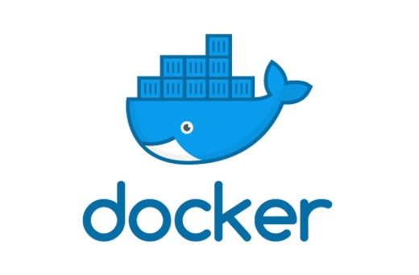

필자는 웹 어플리케이션 개발을 하던 시절에 인프라나 백엔드에 대해서 많이 몰랐던 시기이고 이것저것 공부를 하던 도중에 Docker를 알게 되면서 이것 저것 공부한 내용을 여기에 적어보기로 하겠다. 대체로 서버에 주로 사용하는 콘테이너형 가상 플랫폼으로 Docker를 주로 애용하고 있다. 필자도 서버의 일부중 Docker 컨테이너를 직접 빌드해 사용해본 경험이 있지만, 아직 개념이 잡히지 않은 채 했기 때문에 실제로 다뤄보고 이론을 공부하기 시작했다. 조금씩 Docker에 대해 공부한 내용들을 포스팅으로 적어보기로 했다.
Docker란?

Docker는 다른 가상 머신인 VMWare나 VirtualBox와 같이 완전히 다른 이미지의 공간을 프로세스를 동일화 시켜서 OS의 용량과 CPU 사용량이 대폭화 되며 고성능을 요구한 가상 프로그램에서 단순한 컨테이너 하나만으로 프로세스를 완전히 격리 및 분리시켜 관리하기에 용량과 사용량이 절약되는 가상화 플랫폼이다.
Container란?
Container 란 Docker에서 대표적으로 쓰이는 가상화 방법으로 꼭 필요한 라이브러리, 가상환경 등을 이미지로 만들어 컨테이너에 담아 이 컨테이너를 가상화시킬 수 있다. 컨테이너의 장점은 프로세스의 분리형으로 쓰여서 인프라와 어플리케이션을 확실히 구분지어 사용할 수 있다. 이전 가상머신에서는 이 것을 로컬 용량으로 사용하며 고정적으로 사용할 수 밖에 없지만, 컨테이너는 컨테이너에 인프라를 넣고 어디든지 사용이 가능한 오픈소스 기반으로 사용할 수 있어 편리하다. 심지어 큰 CPU 사용량을 사용하지 않아 기능성에도 유용하다는 것이 장점이다.
컨테이너의 대표적인 예시는 LXC(Linux Container)으로 리눅스 기반의 OS 가상화를 단순화 시켰다. 엔진용 OS를 따로 설치하는 것이 아니라 단순히 리눅스로도 사용되는 컨테이너라 한 엔진안에서 여러가지 어플리케이션 버전을 올릴 수 있어 기능성에서 최고라 생각된다.
Image란?
Image 는 컨테이너 안에 여러가지 넣을 라이브러리, 어플리케이션, 설정등을 담은 내용들이다. 컨테이너 안에는 발주한 물품들이 들어있다 생각하면 이미지는 그 발주한 물품들의 리스트라 생각하면 된다. 그래서 이미지를 설계할때 어떤 물품을 발주할 것 인지 그리고 어떤 OS로 어떤 설정을 할 것인지 지정한 다음 그것을 컨테이너 안에 넣어서 해당 물품을 컨테이너 안으로 넣는다 생각하면 된다.
그리고 이러한 이미지를 Docker Hub를 통해서 배포가 가능하기 때문에 특정한 상황에서의 OS 혹은 설정과 어플리케이션까지 제각각 설정이 가능해서 컨테이너 내용물을 Docker Hub에서 Pull하고 이에 대한 내용물로 좀 더 다양하게 채울 수 있다. 거기에 각 버전들도 제각각 배포되기 때문에 특정 OS에 라이브러리를 지정해서 사용이 가능하다.
우선은 간단한 이론적인 부분들을 넣어보았다. 좀 더 수정할 사항들이나 공부하면서 추가할 사항은 추가적으로 넣어볼 예정이다. 다음 포스트에서는 직접 Image를 제작해 컨테이너를 만들어보는 방법을 해보도록 하겠다.